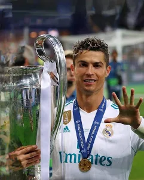

In football socity we have one player who is THE GOAT is Cristiano Ronaldo(CR7) and in this website we will show some photos and goals for him
this image in Real Madriad match when he wins 5fh champions leage

| Club | Appearances | Goals | Assists |
|---|---|---|---|
| Sporting CP | 31 | 5 | 6 |
| Manchester United | 346 | 145 | 64 |
| Real Madrid | 438 | 450 | 131 |
| Juventus | 134 | 101 | 22 |
| Al-Nassr | 60+ | 50+ | 15+ |
And you can watch some goals for CR7 in the next links